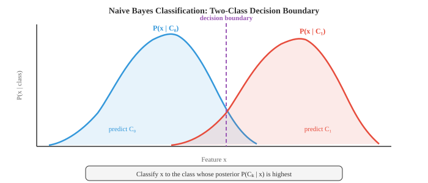
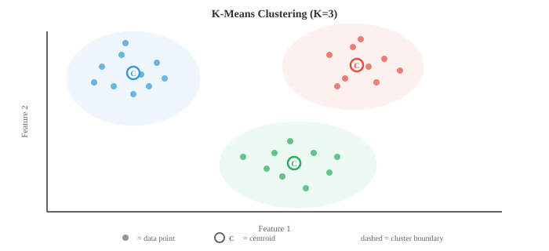

经典机器学习¶
一句话总结：经典机器学习不靠梯度下降，而是用闭式解或启发式搜索从数据中学模式，涵盖朴素贝叶斯、k 近邻、决策树、随机森林、SVM、k 均值与 PCA 等基石算法。
🗺️ 本章导览¶
- 本章覆盖 ML 全景：经典 → 梯度方法 → 深度学习 → 强化学习 → 分布式训练
- 01. 经典机器学习 (本节)：线性回归、逻辑回归、SVM、决策树、集成方法
- 02. 梯度机器学习：目标函数、梯度下降与变体
- 03. 深度学习：前馈网络、反向传播、卷积神经网络 (Convolutional Neural Network, CNN)、循环神经网络 (Recurrent Neural Network, RNN) 基础
- 04. 强化学习: MDP、Q-learning、策略梯度、Actor-Critic
- 05. 分布式深度学习：数据/模型并行、参数服务器、Ring AllReduce
经典机器学习 (Machine Learning, ML) 算法不需要显式编程，而是通过闭式解或启发式搜索、而非梯度下降从数据中学模式。 本节涵盖朴素贝叶斯 (Naive Bayes)、k 近邻 (k-Nearest Neighbors, k-NN)、决策树、随机森林、支持向量机 (Support Vector Machine, SVM)、k 均值聚类以及主成分分析 (Principal Component Analysis, PCA).
-
机器学习研究的是这样一类算法：它们通过从数据中学习来提升在某项任务上的表现，而不是靠人写死规则。 你不用再写 "if 收入 > 50k and 年龄 < 30 then 批准贷款"，而是把成千上万条历史贷款决策交给算法，让它自己找出模式。
-
大方向有三种范式。 监督学习 (supervised learning) 用带标签的数据，即每个输入都配好了已知的正确输出，算法要学的是从输入到输出的映射。 无监督学习 (unsupervised learning) 处理无标签数据，试图挖掘隐藏结构，比如聚类或压缩表示。 强化学习 (reinforcement learning) 通过试错来学，在环境中执行动作后接收奖励或惩罚 (详见本章第 04 节).
-
在监督学习内部，分类 (classification) 预测离散类别 (垃圾邮件还是正常邮件，猫还是狗), 回归 (regression) 预测连续值 (房价、明天的气温). 二者的边界并不总是清晰：逻辑回归 (logistic regression) 名字里带 "回归"，但做的其实是分类。
-
概率模型里有个关键区分：生成式 vs 判别式 (generative vs discriminative). 生成式模型学的是联合分布 \(P(x, y)\)，意思是它理解数据本身是怎么生成的，因此可以采样出新样本。 判别式模型直接学 \(P(y \mid x)\)，只关心类别之间的边界。 朴素贝叶斯属于生成式；逻辑回归 (第 02 节) 属于判别式。 生成式模型更灵活但难训练好；判别式模型在数据足够时通常给出更好的分类准确率。
-
朴素贝叶斯 (Naive Bayes) 是最简单也最有效的分类器之一。 它直接套用贝叶斯定理 (见第 05 章):
-
"朴素" 之处在于一个很强的独立性假设：给定类别后，它把每个特征都当作独立。 拿垃圾邮件分类举例，朴素贝叶斯会假设：一旦你知道邮件是垃圾邮件，出现单词 "free" 对是否出现单词 "winner" 就没有任何影响。 现实中几乎不可能成立，但这个分类器居然还挺好用。
-
因为 \(P(x)\) 对所有类别都相同，分类就简化为挑出让分子最大的那个类:
-
先验 \(P(C_k)\) 就是每个类别在训练集中的占比。 似然 \(P(x_i \mid C_k)\) 则取决于特征的种类，由此衍生出三种常见变体。
-
多项式朴素贝叶斯 (Multinomial Naive Bayes) 面向计数型数据，比如文档里的词频。 每个特征 \(x_i\) 代表词 \(i\) 出现了多少次，似然服从多项式分布。 它是文本分类、情感分析、垃圾邮件过滤的标配。
-
高斯朴素贝叶斯 (Gaussian Naive Bayes) 假设每个类别下每个特征都服从正态分布。 从训练数据估出特征 \(i\) 在类别 \(k\) 下的均值 \(\mu_{ik}\) 与方差 \(\sigma_{ik}^2\)，再算:
- 当特征是连续测量值 (身高、体重、传感器读数) 时，这是自然选择。

-
伯努利朴素贝叶斯 (Bernoulli Naive Bayes) 建模二值特征：特征要么存在 (1) 要么不存在 (0). 你不数某个词出现几次，只关心它有没有出现。 这对短文本或二值特征向量很合适。
-
有个实际问题：训练集里如果某个特征值从未与某类别同时出现过，那对应的似然就是 0，由于所有项是连乘，整个后验会直接塌成 0. 拉普拉斯平滑 (Laplace smoothing) 解决办法是给每一对 "特征值-类别" 组合都加一个小计数 (通常是 1):
-
其中 \(\alpha\) 是平滑参数 (一般取 1), \(V\) 是该特征可能取值的个数。 这样任何概率都不会精确为 0.
-
决策树 (decision tree) 走的是完全不同的路线。 它不算概率，而是用一连串 yes/no 问题把特征空间切开。 想象 "二十个问题" 游戏：每一步都问那个能把可能性缩得最狠的问题。
-
一棵树从根节点开始，手握全部训练样本。 每个内部节点挑一个特征和一个阈值来分裂 (比如 "年龄 < 30 吗?"). 样本根据答案流向左或右。 递归下去，直到叶节点，叶节点给出预测：分类任务用多数类，回归任务用均值。

-
关键问题是：到底该按哪个特征分裂？你想要的分裂能让子节点尽可能 "纯"，即绝大多数样本属于同一类。 两个常用的不纯度度量是 基尼不纯度 (Gini impurity) 与 熵 (entropy).
-
基尼不纯度 衡量：如果按节点内的分布随机给一个样本贴标签，它被错分的概率:
-
如果节点完全纯 (全部同类)，基尼为 0. 如果类别完全均衡 (二分类就是 50/50)，基尼取到最大值 0.5.
-
熵 (来自第 05 章信息论那一节) 衡量平均意外度:
-
纯节点熵为 0. 完全均衡的二分类节点熵为 1 bit. 实践中，基尼和熵给出的树非常相似；基尼不用算对数，速度略快一点。
-
对齐 sklearn API：在
sklearn.tree.DecisionTreeClassifier与RandomForestClassifier里，这两个准则通过criterion参数切换。 分类树的合法取值是"gini"(默认)、"entropy"与"log_loss"(后两者等价，都算香农熵)；回归树 (DecisionTreeRegressor) 的criterion则是"squared_error"(默认)、"friedman_mse"、"absolute_error"或"poisson"，对应上面提到的方差下降那一类分裂准则。 sklearn 默认基尼是有原因的：大多数数据集上两者精度差别在噪声范围内，而基尼省掉了对数运算，训练更快 [scikit-learn Decision Trees User Guide, sklearn.tree.DecisionTreeClassifier v1.5 API]. -
信息增益 (information gain) 是一次分裂带来的不纯度下降。 对于把集合 \(S\) 分成 \(S_L\) 和 \(S_R\) 的分裂:
-
算法在每个节点贪心地挑信息增益最大的分裂。 这是局部最优、不是全局最优，但在实践中效果不错。
-
回归树 (regression tree) 机制一样，只是叶节点预测连续值 (落到该叶的样本的均值)，分裂准则换成方差下降，而不是基尼或熵。
-
不加约束的话，决策树会一直分裂到每个叶都纯，本质就是把训练集背下来，这是严重的过拟合。 剪枝 (pruning) 是解药。 预剪枝在生长阶段就设限：最大深度、每叶最少样本数、或分裂所需的最小信息增益。 后剪枝先把完整树长出来，再砍掉那些在验证集上不带来提升的分支。
-
单棵决策树好解释，但不稳定：数据里一点小变动可能长出一棵完全不同的树。 集成方法 (ensemble methods) 通过组合多个模型，拿到单模型达不到的预测效果。
-
核心思想是 "群体智慧". 让 100 个平庸的分类器投票，只要它们的错误之间某种程度上相互独立，集成的结果可以非常优秀。
-
Bagging (bootstrap aggregating，自助聚合) 在数据的不同随机子集上训练多个模型，每个子集是有放回抽样 (bootstrap 样本)，每个模型大约看到原始数据的 63%. 预测时，回归取输出均值、分类取多数票。 由于各模型看到的数据不同，犯的错也不同，一平均，方差就被抵消掉大半。
-
随机森林 (Random Forest) 是把 Bagging 用在决策树上，外加一个小花招：每次分裂时，树只考虑随机子集的特征 (通常从 \(d\) 个特征里挑 \(\sqrt{d}\) 个). 这进一步让树之间去相关，集成更强。 随机森林是整个机器学习里最可靠的 "拿来就能用" 分类器之一。

-
Boosting (提升) 走的是相反的哲学。 它不独立训练模型，而是顺序训练，每个新模型专注于前面模型做错的样本。
-
AdaBoost (Adaptive Boosting，自适应提升) 给每个训练样本维护一个权重。 初始权重相等。 训完一个弱学习器 (通常是很浅的决策树，叫 "树桩") 后，被错分的样本权重被抬高，下一个学习器就会多关注它们。 最终预测是所有学习器的加权投票，表现好的学习器话语权更大:
- 学习器 \(t\) 的权重 \(\alpha_t\) 取决于它的错误率 \(\epsilon_t\):
-
错误率低的学习器拿到大正权重；表现只等同于抛硬币 (\(\epsilon = 0.5\)) 的权重为 0.
-
梯度提升 (Gradient Boosting) 把这个思路推广。 它不再给样本重新加权，而是让每个新模型去拟合当前集成的残差 (损失函数的负梯度). 对平方误差损失，残差就是预测与目标的差值。 决策树上的梯度提升 (Gradient Boosted Decision Trees, GBDT) 是结构化数据竞赛里许多冠军方案的核心 (XGBoost、LightGBM、CatBoost 都是流行实现).
-
关键对比：Bagging 降 方差 (variance) (平均掉噪声), Boosting 降 偏差 (bias) (纠正系统性错误). 单模型容易过拟合时选 Bagging，单模型欠拟合时选 Boosting.
-
转到无监督学习，K 均值聚类 (K-Means clustering) 是最简单也是最常用的聚类算法。 给定 \(n\) 个数据点与目标簇数 \(K\)，它把每个点分到 \(K\) 组之一，目标是让每个点到所在簇中心的总距离最小。
-
算法交替两步。 第一步，分配：每个点归到最近的簇中心。 第二步，更新：每个簇中心变成分配给它的所有点的均值。 反复直到分配不再变化。 由于簇内总距离在每一步都不会上升，收敛是有保证的。

- 严格地讲，K 均值最小化簇内平方和，又叫 惯量 (inertia):
-
其中 \(\mu_k\) 是簇 \(C_k\) 的中心。
-
K 均值对初始化很敏感。 起始簇心选得不好会陷入糟糕的局部极小。 K-Means++ 初始化策略是：第一个簇心随机选，之后每个新簇心以 "到当前最近簇心的平方距离" 为概率来选。 这样初始点会散得开，结果几乎总是更好。
-
空簇处理 (empty cluster handling)：更新步骤中，如果某个簇没被任何点分配到 (即 \(|C_k| = 0\))，均值 \(\mu_k\) 就是 0/0，数值上退化为 NaN. 常见对策有两种：(a) 随机重初始化，从数据中随机挑一个点作为新簇心；(b) 最远点重初始化 (farthest-point reinit)，挑当前离最近簇心最远的那个点作为新簇心，相当于就地补一次 K-Means++ 采样。 scikit-learn 的实现走的是最远点策略 (据 scikit-learn 官方文档 2024).
-
\(K\) 怎么选？有两个常用工具。 肘部法 (elbow method) 画出惯量随 \(K\) 的曲线，找那个 "拐点"，拐点之后加簇不再显著降低惯量。 轮廓系数 (silhouette score) 衡量一个点与自己簇的相似度和与最近其他簇的相似度之比，范围 -1 (分错簇) 到 +1 (分得漂亮). 所有点轮廓系数取均值，就是整体聚类质量的度量。
-
K 均值也有局限：它假设簇是球形且大小接近，而且做 "硬" 分配 (每个点属于且仅属于一个簇). 高斯混合模型 (Gaussian Mixture Model, GMM) 把这两个限制都松开。
-
GMM 把数据建模为 \(K\) 个高斯分布的混合，每个高斯有自己的均值 \(\mu_k\)、协方差 \(\Sigma_k\) 与混合权重 \(\pi_k\) (权重之和为 1):
-
不再是硬分配，每个点得到 软分配 (soft assignment)：属于每个簇的概率 (叫 "责任度"). 一个位于两个高斯边界的点，可能 60% 属于簇 A、40% 属于簇 B.
-
GMM 用 期望最大化 (Expectation-Maximization, EM) 算法 拟合，与 K 均值一样两步交替。 E 步 (E-step) 计算责任度：对每个点，它来自每个高斯的概率是多少？M 步 (M-step) 更新参数：给定责任度，最佳的均值、协方差、混合权重是什么？EM 保证每一轮数据似然都不下降，收敛到局部极大。
-
K 均值其实是 EM + GMM 的特例：对应等协方差的球形高斯与 (0/1) 硬责任度。
-
支持向量机 (Support Vector Machine, SVM) 从几何视角看分类。 给定两个线性可分的类，能分开它们的超平面有无数条。 SVM 挑那条 最大间隔 (maximum margin) 的，即超平面到两侧最近点之间的间隙最大。
-
那些最近点，正好落在间隔边缘上的点，叫 *支持向量 (support vectors). 它们是唯一决定边界的点；其他训练点删掉也不影响超平面。

- 对线性分类器 \(f(x) = w \cdot x + b\)，求最大间隔等价于解:
-
这是一个凸二次规划，有唯一全局解 (不用担心局部极小).
-
真实数据几乎不会完全可分。 软间隔 SVM (soft-margin SVM) 引入松弛变量 \(\xi_i \geq 0\)，允许一些点越界:
-
超参数 \(C\) 控制权衡：\(C\) 大就狠罚错分 (更贴数据，可能过拟合), \(C\) 小则容许更多越界 (间隔更宽，更正则化).
-
SVM 最强的招式是 核技巧 (kernel trick). 很多在原特征空间线性不可分的数据集，映射到更高维空间后就变得可分。 核技巧让你在那个高维空间里算点积，而不用显式做映射。
-
核函数 \(K(x_i, x_j) = \phi(x_i) \cdot \phi(x_j)\) 替换掉 SVM 优化里每一个点积。 最常用的是 径向基函数 (Radial Basis Function, RBF) 核:
-
RBF 核隐式把数据映到无穷维空间。 参数 \(\gamma\) 控制单个训练点的影响范围：\(\gamma\) 大意味着每个点只影响它周围一小圈 (可能过拟合), \(\gamma\) 小则给出更平滑的边界。
-
其他常见核有多项式核 \(K(x_i, x_j) = (x_i \cdot x_j + c)^d\) 与线性核 \(K(x_i, x_j) = x_i \cdot x_j\) (线性核就是不做任何变换的标准 SVM).
-
实践中，在深度学习接管以前，带 RBF 核的 SVM 长期是分类王者。 到今天它在中小规模数据上仍然好用，特别是特征维度相对样本数很大的情况。
-
SVM 与第 02 章 (矩阵) 的联系很深。 它的优化通常在对偶形式下解，解只依赖训练样本之间的点积，这正是让核技巧成立的关键。 整个算法都在内积与线性代数的语言里运作。
-
经典 ML 工具箱小结:
| 算法 | 类型 | 主要优势 | 主要弱点 |
|---|---|---|---|
| 朴素贝叶斯 | 监督 (生成式) | 快，数据少也能用 | 独立性假设 |
| 决策树 | 监督 | 可解释 | 容易过拟合 |
| 随机森林 | 监督 (集成) | 稳健，超参数少 | 可解释性下降 |
| 梯度提升 | 监督 (集成) | 表格数据上的 SOTA | 慢，需调参 |
| K 均值 | 无监督 (聚类) | 简单，可扩展 | 假设球形簇 |
| GMM | 无监督 (聚类) | 软分配，形状灵活 | 对初始化敏感 |
| SVM | 监督 | 高维空间下有效 | 大数据集慢 |
Coding Tasks (use CoLab or notebook)¶
-
从零实现高斯朴素贝叶斯。 在合成的 2D 两类数据上训练并可视化决策边界。 与 scikit-learn 的实现对比。
import jax.numpy as jnp import matplotlib.pyplot as plt from sklearn.datasets import make_classification # 生成合成数据 X, y = make_classification(n_samples=300, n_features=2, n_redundant=0, n_informative=2, n_clusters_per_class=1, random_state=42) X, y = jnp.array(X), jnp.array(y) # 从零拟合高斯朴素贝叶斯 classes = jnp.unique(y) params = {} for c in classes: c = int(c) mask = y == c X_c = X[mask] params[c] = { 'mean': jnp.mean(X_c, axis=0), 'var': jnp.var(X_c, axis=0), 'prior': jnp.sum(mask) / len(y) } def gaussian_log_likelihood(x, mean, var): return -0.5 * jnp.sum(jnp.log(2 * jnp.pi * var) + (x - mean)**2 / var) def predict(X): preds = [] for x in X: log_posts = [] for c in [0, 1]: log_post = jnp.log(params[c]['prior']) + gaussian_log_likelihood( x, params[c]['mean'], params[c]['var']) log_posts.append(log_post) preds.append(jnp.argmax(jnp.array(log_posts))) return jnp.array(preds) # 决策边界可视化 xx, yy = jnp.meshgrid(jnp.linspace(X[:,0].min()-1, X[:,0].max()+1, 200), jnp.linspace(X[:,1].min()-1, X[:,1].max()+1, 200)) grid = jnp.column_stack([xx.ravel(), yy.ravel()]) zz = predict(grid).reshape(xx.shape) plt.figure(figsize=(8, 6)) plt.contourf(xx, yy, zz, alpha=0.3, cmap='coolwarm') plt.scatter(X[y==0, 0], X[y==0, 1], c='#3498db', label='Class 0', edgecolors='k', s=20) plt.scatter(X[y==1, 0], X[y==1, 1], c='#e74c3c', label='Class 1', edgecolors='k', s=20) plt.title("Gaussian Naive Bayes Decision Boundary") plt.legend() plt.grid(alpha=0.3) plt.show() accuracy = jnp.mean(predict(X) == y) print(f"Training accuracy: {accuracy:.2%}") -
构建用基尼不纯度分裂的决策树。 实现单个节点的分裂逻辑，展示信息增益如何挑出最好的特征与阈值。
import jax.numpy as jnp def gini_impurity(y): """标签数组的基尼不纯度.""" classes, counts = jnp.unique(y, return_counts=True) probs = counts / len(y) return 1.0 - jnp.sum(probs ** 2) def information_gain(y, left_mask): """按布尔掩码把 y 分成 left/right 后的信息增益.""" parent_gini = gini_impurity(y) left_y, right_y = y[left_mask], y[~left_mask] n = len(y) if len(left_y) == 0 or len(right_y) == 0: return 0.0 child_gini = (len(left_y)/n) * gini_impurity(left_y) + \ (len(right_y)/n) * gini_impurity(right_y) return float(parent_gini - child_gini) def best_split(X, y): """找出让信息增益最大的特征与阈值.""" best_ig, best_feat, best_thresh = -1, None, None for feat in range(X.shape[1]): thresholds = jnp.unique(X[:, feat]) for thresh in thresholds: mask = X[:, feat] <= float(thresh) ig = information_gain(y, mask) if ig > best_ig: best_ig, best_feat, best_thresh = ig, feat, float(thresh) return best_feat, best_thresh, best_ig # 例: 合成数据 from sklearn.datasets import make_classification X, y = make_classification(n_samples=100, n_features=4, n_redundant=0, random_state=0) X, y = jnp.array(X), jnp.array(y) feat, thresh, ig = best_split(X, y) print(f"Best split: feature {feat}, threshold {thresh:.3f}, info gain {ig:.4f}") print(f"Parent Gini: {gini_impurity(y):.4f}") mask = X[:, feat] <= thresh print(f"Left Gini: {gini_impurity(y[mask]):.4f} ({int(jnp.sum(mask))} samples)") print(f"Right Gini: {gini_impurity(y[~mask]):.4f} ({int(jnp.sum(~mask))} samples)") -
从零实现带 K-Means++ 初始化的 K 均值。 对合成数据集聚类，并可视化每次迭代的簇结果。
import jax import jax.numpy as jnp import matplotlib.pyplot as plt from sklearn.datasets import make_blobs # 生成合成簇 X, y_true = make_blobs(n_samples=300, centers=4, cluster_std=0.8, random_state=42) X = jnp.array(X) def kmeans_plus_plus_init(X, K, key): """K-Means++ 初始化.""" n = X.shape[0] idx = jax.random.randint(key, (), 0, n) centroids = [X[idx]] for _ in range(1, K): dists = jnp.min(jnp.stack([jnp.sum((X - c)**2, axis=1) for c in centroids]), axis=0) probs = dists / jnp.sum(dists) key, subkey = jax.random.split(key) idx = jax.random.choice(subkey, n, p=probs) centroids.append(X[idx]) return jnp.stack(centroids) def kmeans(X, K, max_iters=20, key=jax.random.PRNGKey(0)): centroids = kmeans_plus_plus_init(X, K, key) history = [centroids] for _ in range(max_iters): # 分配步骤 dists = jnp.stack([jnp.sum((X - c)**2, axis=1) for c in centroids]) labels = jnp.argmin(dists, axis=0) # 更新步骤 new_centroids = jnp.stack([ jnp.mean(X[labels == k], axis=0) for k in range(K) ]) history.append(new_centroids) if jnp.allclose(centroids, new_centroids): break centroids = new_centroids return labels, centroids, history K = 4 labels, centroids, history = kmeans(X, K) # 画出最终结果 colors = ['#3498db', '#e74c3c', '#27ae60', '#9b59b6'] plt.figure(figsize=(8, 6)) for k in range(K): mask = labels == k plt.scatter(X[mask, 0], X[mask, 1], c=colors[k], s=20, alpha=0.6) plt.scatter(centroids[k, 0], centroids[k, 1], c=colors[k], marker='X', s=200, edgecolors='k', linewidths=1.5) plt.title(f"K-Means Clustering (K={K}, {len(history)-1} iterations)") plt.grid(alpha=0.3) plt.show() # 计算惯量 inertia = sum(jnp.sum((X[labels == k] - centroids[k])**2) for k in range(K)) print(f"Final inertia: {inertia:.2f}") -
演示核技巧。 通过对多项式核比较 "核矩阵" 与 "显式特征映射后的点积"，说明 RBF 核在高维空间里算的确实是点积。
import jax.numpy as jnp # 简单 2D 数据 X = jnp.array([[1.0, 2.0], [3.0, 4.0], [5.0, 6.0]]) # 多项式核: K(x,y) = (x·y + 1)^2 def poly_kernel(X, degree=2, c=1.0): return (X @ X.T + c) ** degree # 2D 的显式二次特征映射: (1, sqrt(2)*x1, sqrt(2)*x2, x1^2, x2^2, sqrt(2)*x1*x2) def poly_features(X): x1, x2 = X[:, 0], X[:, 1] return jnp.column_stack([ jnp.ones(len(X)), jnp.sqrt(2) * x1, jnp.sqrt(2) * x2, x1 ** 2, x2 ** 2, jnp.sqrt(2) * x1 * x2 ]) K_trick = poly_kernel(X) phi = poly_features(X) K_explicit = phi @ phi.T print("Kernel trick (polynomial degree 2):") print(K_trick) print("\nExplicit feature map dot products:") print(K_explicit) print(f"\nMatrices match: {jnp.allclose(K_trick, K_explicit)}") # RBF 核: 没有有限的显式映射 def rbf_kernel(X, gamma=0.5): sq_dists = jnp.sum(X**2, axis=1, keepdims=True) + \ jnp.sum(X**2, axis=1) - 2 * X @ X.T return jnp.exp(-gamma * sq_dists) K_rbf = rbf_kernel(X) print("\nRBF kernel matrix:") print(K_rbf) print("Diagonal is always 1 (a point is identical to itself)") print("Off-diagonal entries decay with distance")
📌 本节要点¶
- 机器学习范式：监督学习学映射，无监督学习挖结构，强化学习靠试错。
- 生成式 vs 判别式：前者学联合分布 \(P(x, y)\) 可采样，后者直接学 \(P(y \mid x)\) 更擅分类。
- 朴素贝叶斯：强独立性假设 + 贝叶斯定理，简单快速，三种变体 (多项式/高斯/伯努利) 应对不同特征。
- 拉普拉斯平滑：给每个特征-类别对加小计数，避免零概率吞掉整个后验。
- 决策树：用基尼或熵找信息增益最大的分裂，直观但易过拟合，需剪枝或限深。
- Bagging vs Boosting: Bagging 并行降方差 (随机森林), Boosting 串行降偏差 (AdaBoost、梯度提升).
- K 均值与 GMM: K 均值做硬分配 + 假设球形簇；GMM 用 EM 做软分配，支持椭圆形簇。
- SVM 最大间隔：只支持向量决定超平面，软间隔用 \(C\) 权衡，核技巧把线性方法送进高维。
- RBF 核：隐式映射到无穷维，\(\gamma\) 越大边界越弯，深度学习之前的分类王者。
- 算法选型：表格数据首选梯度提升，高维小样本用 SVM，需要可解释性选决策树，数据稀少上朴素贝叶斯。